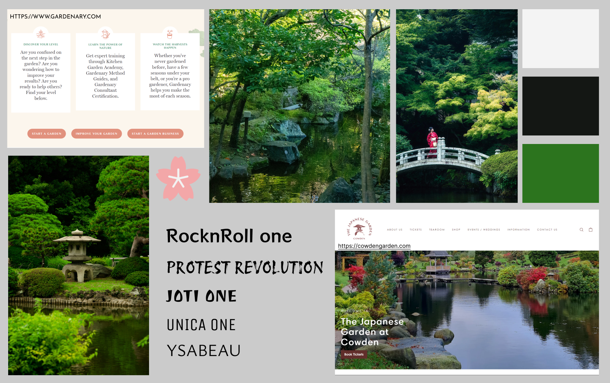
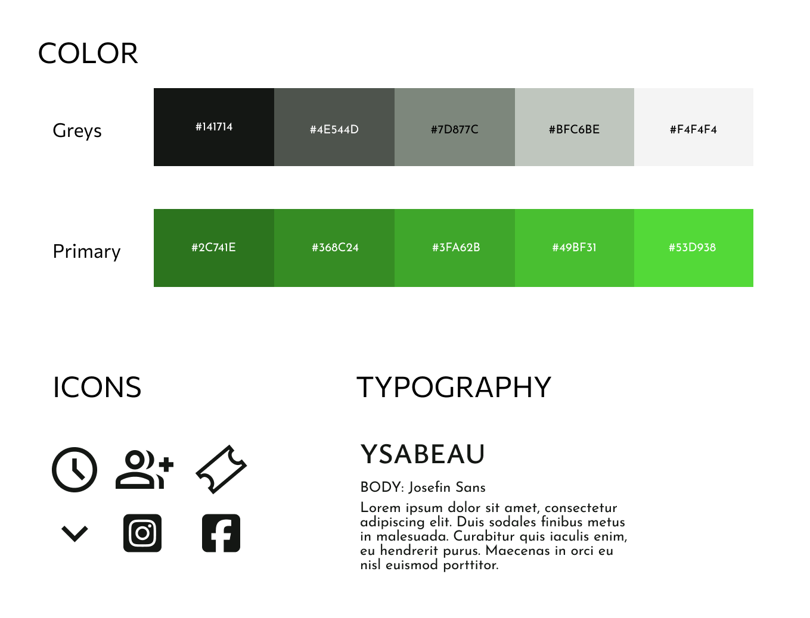
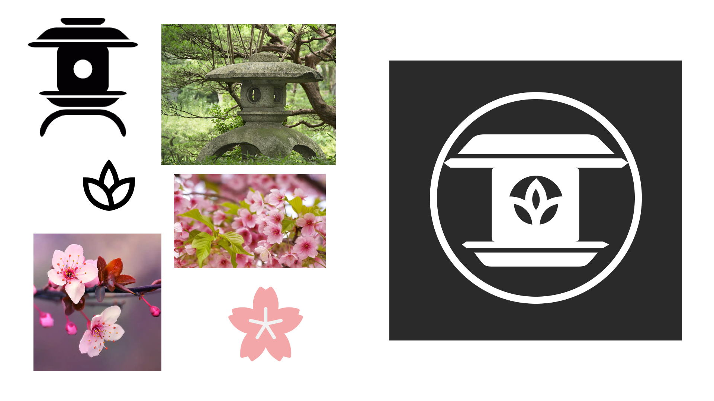
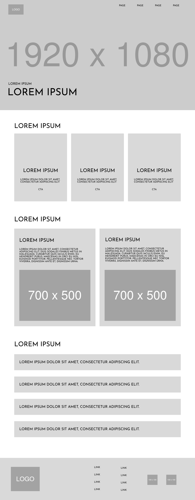

Jeg generede et tilfældigt prompt til en design challenge, hvor jeg fik ud "Design: A landingpage, For: Japanese Garden", To help: Tourists", Derfor blev jeg nødt til at undersøge hvad en japansk have er, hvad den indeholder og hvad tiltrækker folk til disse haver.
Japanske haver er i følge Britanica en form for landskabsarkitektur eller havekunst, som er designet med formålet om at inspirere til refleksion og mediation. Det er derfor også tit nævnt sammen med ordet Zen. På trods af navnet er det ikke begrænset til japan, men mere en æstetik stil. Derfor har de her unikke haver også nogle typiske fællestræk, som tamate landscaping beskriver godt.
Fælles træk
- Sten: Der er næsten altid sten og de er ofte runde og bløde og bruges til at give haverne karakter. De symboliserer varighed
- Vand: Om det er et vandfald, en lille å eller bare frit flydende vand, så giver det haven en blid og rolig fornemmelse. De blide lyde fra rindende vand bidrager til stemningen. Det symboliserer fornyelse og kontinuitet
- Broer: De giver en fri mulighed til at stoppe op og nyde omgivelserne omkring sig.
- Lanterner: De unikke lanterner er oftests lavet af sten og har et unikt mønster og nogle gange tegn. De giver lys når solen ikke gør og de skiller den sig ud fra de naturlige elementer i haven, samtidig med at den er en del af den
- Planter: Vand kan oftest erstattes af grus eller sand men planter vil altid være en vigitg del af en japansk have. De rigtige planter og blomster gør en kæmpe forskel i at give fornemmelse af en minimalistiske æstetik
- Landskab i Landskab: Det duer ikke bare at have en masse planter og sten fra japan. Man kan opbygge diverse ting, som en bro over en lille å med koi fisk eller andre små mindre ting. Det vigige er at man fanger følelsen af Zen
Moodboard
For at kunne skabe et overblik over de her fællestræk og hvordan jeg kunne bruge dem til min fordel, startede jeg med at lave et moodboard. Jeg ville først gerne have en ide omkring hvordan de første 5 fællestræk egentlig kunne fremstå. Derfor fandt jeg billeder der indeholder, sten, planter, lanterner, vand og broer. Her på billederne fremstår alle farverne med meget klar kontrast og virker godt sammen, så jeg valgte at udvælge farver fra de udvalgte billeder til at repræsentere haverne. Den lyse fra broen, lanterne og sten, den grønne for planterne og den mørke for vandet.

Udover hvordan en japansk have fremstår ville jeg også undersøge hvorledes andre hjemmesider opsatte deres design ift. Haver. Her fandt jeg Gardenary og Cowden Garden som begge har haver som fokus. Til sidst gik jeg efter inspiration i skrifttyper. Der var mange at vælge imellem, hvor jeg så vidt så muligt forsøgte at udvælge nogle skrifttyper som gav en japansk æstetiske stemning eller den her rolige zen.
Design System
Ud fra det moodboard tog jeg nogle komponenter med over for at lave et lille designsystem til mit design. Jeg tog farverne derfra og udvidet dem så de dækkede flere nuancer. Derudover valgte jeg at gå med skrifttypen ”YSABEAU” siden den stadig har de lidt mere bløde former man oplever i japansk æstetik, men også er meget rolig og ikke er alt for dekorativ. Samt udvalgte jeg også et par nyttige ikoner.

Navn og budskab
Jeg kunne have valgt en eksisterende have men valgte istedet at opdigte en. Derfor var det også vigtigt at have skulle have et navn og et budskab som jeg ville kunne gå ud fra. På grund af den her zen som der ofte er tale om, så valgte jeg at gå med navnet "Komorebi". Ordet betyder sollys, på japansk. Specifikt betyder det synlige lysstråler. Dog har ordet også en spirituel betydning: den styrker ens forbindelse med naturen og symboliserer harmoni og inspirere til følelser såsom ro. Af denne grund mente jeg også at budskabet skulle passe. Derfor ville det endelig budskab for den opdigtede have være Harmoni med naturen og sindsro.
logo Design
Eftersom jeg valgte at opdigte den her have var der også mulighed for at tænke på branding. Derfor valgte jeg også at lave et hurtigt logo til haven. Igen ville jeg gerne bruge nogle af de fælles træk der var og endte med at tage inspiration af lanterne på grund af deres unikke designs. Japan er også ofte kendt for planter såsom kirsebærtræer med smukke blomster, hvilket jeg også brugte til min inspiration. Jeg valgte at sætte begge disse sammen til et fuldendt logo for haven.

Low fidelity prototyper
For at næmmere kunne skabe et sammenhængende design valgte jeg at lave en wireframe. Her tog jeg højde for det visuelle hierarki. Det involverede blandt andet favoritten, gestalt principperne. Jeg har haft fokus på to af lovene. Først loven om lukkethed. Siden har en del cards og derfor var det essentielt at de her cards og deres indhold var grupperet ordenligt så brugeren forstod at disse genstande var det. Derefter loven om lighed. På grund af sidens mange cards var det også nødvendigt at der var en klar opdeling af hvilke cards der egentlig hang sammen hvor.

High-fidelity prototyper
Nu hvor den generelle struktur var på plads kunne jeg sikkert tilfølge indhold og billeder for at fuldende siden og lave en hi-fi mockup. Her var der større fokus på ting som readability, farver, kontrast, m.m. Jeg havde fundet et flot billede der passede perfekt ind til det herobillede jeg havde afsat plads til, derfor baserede jeg mit design omkring det. Ved at bruge de mørke farver fra billedet kunne jeg udnytte farverne fra designsystem uden af ødelægge kontrasten. Gennem hele designet er der fokus på runde hjørne, høj kontrast billeder for at matche farverne og informerende tekst.

For at undersøge hvor vidt om mit design også ligner og afgiver den stemning og det budskab som det skal, udførte jeg en brugertest. Dette gjorde jeg ved hjælp af en 5-second test. Eftersom min målgruppe fra mit prompt var turister, havde jeg fokus på at finde testpersoner der hyppigt har været ud at rejse, men heller ikke har noget imod naturen.
- Hvad så du først?
- Hvad handler siden om?
- Hvilken stemning syntes du der var?
Alle testpersoner svarede ærligt, dog med lange pauser, på alle spørgsmålene. Resultaterne var næsten de samme hele vejen igennem, udover en person der have en fornemmelse af ”en speciel forlystelses park”.
Resultater
- Det første de så var mennesker, mørke og natur. Derefter var der få der nævnte at have set teksten.
- De fleste mente at siden handlede om noget med natur
- Stemningen var meget enkelt, stille på en måde. Begrundelsen for den stille stemning var den måde at farverne var mørke men at der stadig var et naturligts lys.
Ved projektets afslutning lykkedes det mig at designe en landingpage, der fangede stemningen fra en japansk have ved hjælp af atomic design gennem et designsystem, gestaltprincipper og visuel hierarki, samtidig med at den forblev tro mod sine værdier og gav masser af plads til at informere turister eller potentielle besøgende om de mange fordele ved at besøge haven.